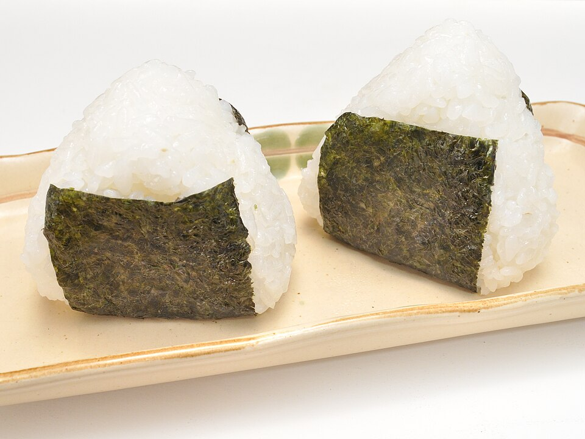

Run Fuel, Snack, Prep, By Claude
Base
2 cups uncooked sushi (short-grain) rice
3 cups water
Sweet version
2 tablespoons honey
2 tablespoons almond butter
1/2 teaspoon kosher salt
1/2 cup chopped Medjool dates or dried cherries (optional)
Savory version
4 large eggs, scrambled soft and chopped
2 teaspoons low-sodium soy sauce
3/4 teaspoon kosher salt
2 scallions, minced (optional)
Whole-food fuel for runs longer than about 75 minutes, when you should take in 30–60g carbs per hour. The cakes are soft, slightly salty, and easy to digest, and each square has about 30g carbs. There's a sweet version and a savory one.
Cook the rice in a rice cooker, or the Instant Pot on High 6 minutes with 10 minutes natural release. It should be sticky.
While the rice is hot, stir in either the sweet or the savory add-ins until evenly mixed.
Press firmly into a parchment-lined 8×8 pan. Wet hands or a second sheet of parchment help. Cool completely.
Cut into 12 squares and wrap each in foil or parchment, twisting the ends like candy so they're easy to open while running.
Keeps 3 days in the fridge or 1 month frozen. Thaw overnight before a run.
When to eat: start 45–60 minutes into the run, then 1 square every 30–40 minutes, with water. Practice on training runs before relying on them. Simpler option: 2 Medjool dates rolled in a little flaky salt give about 36g carbs.
~150 CALORIES (sweet, per square)
3G PROTEIN
3G FAT
30G CARBS
~160MG SODIUM
Photo: Onigiri 002.jpg by Ocdp, CC0, via Wikimedia Commons. Representative image, not this exact recipe.